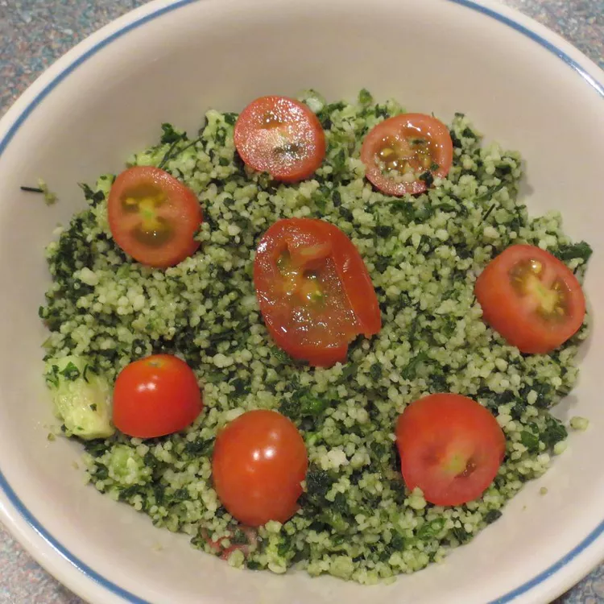

Tabouleh

How to Make Tabouleh
A delicious, easy, and healthy take on the Greek favorite and, most importantly, a recipe for fresh kale that
doesn't involve soup! Za'atar can be substituted for sumac if desired.
Tabouleh Ingredients
- 1 cup boiling water
- ⅔ cup lemon juice
- ½ cup olive oil
- 2 cups whole wheat couscous
- 2 cups chopped fresh kale
- 2 small tomatoes, chopped
- 3 small mushrooms, chopped, or more to taste
- ½ teaspoon ground sumac (Optional)
- salt to taste
How to make tabouleh step by step:
- Pour water, lemon juice, and olive oil over couscous in a bowl; cover with plastic wrap and let stand until
liquid is absorbed and couscous is softened, about 5 minutes
- Mix kale, tomatoes, mushrooms, sumac, and salt into couscous mixture; refrigerate until cold, at least 30
minutes
Back